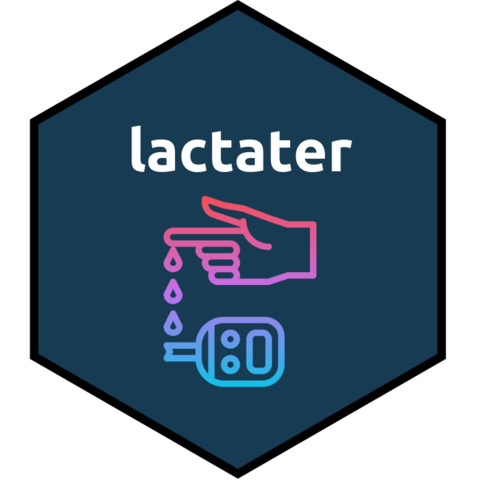

Lactate Turning Point (LTP)
method_ltp.RdIt applies the LTP methods: LTP1, and LTP2.
Arguments
- data_prepared
The data retrieved from
prepare_data().- fit
The fit you would like to use for finding the lactate values associated to each one of the lactate thresholds.
- sport
The sport at which the incremental test was performed. One of
cycling,running, orswimming.- plot
A boolean to indicate whether to generate a plot from each one of the methods.
Value
a tibble with the following columns:
- method
the method used to estimate the lactate threshold
- fitting
the fitting method used to predict the lactate curve
- intensity
the intensity associated with the estimated lactate threshold
- lactate
the lactate concentration associated with the estimated lactate threshold
- heart_rate
the heart rate associated with the estimated lactate threshold
- plot
the plot produced to display the lactate threshold